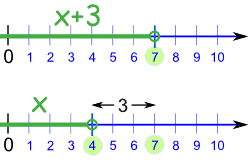

Solving Inequalities
Sometimes we need to solve Inequalities like these:
| Symbol |
Words |
Example |
|---|---|---|
| > |
greater than |
x + 3 > 2 |
| < |
less than |
7x < 28 |
| ≥ |
greater than or equal to |
5 ≥ x − 1 |
| ≤ |
less than or equal to |
2y + 1 ≤ 7 |
Solving
Our aim is to have x (or whatever the variable is) on its own on the left of the inequality sign:
| Something like: | x < 5 | |
| or: | y ≥ 11 |
We call that "solved".
Example: x + 2 > 12
Subtract 2 from both sides:
x + 2 − 2 > 12 − 2
Simplify:
x > 10
Solved!
How to Solve
Solving inequalities is very like solving equations ... we do most of the same things ...
... but we must also pay attention to the direction of the inequality.

Direction: Which way the arrow "points"
Some things can change the direction!
< becomes >
> becomes <
≤ becomes ≥
≥ becomes ≤
Safe Things To Do
These things do not affect the direction of the inequality:
- Add (or subtract) a number from both sides
- Multiply (or divide) both sides by a positive number
- Simplify a side
Example: 3x < 7+3
We can simplify 7+3 without affecting the inequality:
3x < 10
But these things do change the direction of the inequality ("<" becomes ">" for example):
- Multiply (or divide) both sides by a negative number
- Swapping left and right hand sides
Example: 2y+7 < 12
When we swap the left and right hand sides, we must also change the direction of the inequality:
12 > 2y+7
Here are the details:
Adding or Subtracting a Value
We can often solve inequalities by adding (or subtracting) a number from both sides (just as in Introduction to Algebra), like this:
Example: x + 3 < 7
If we subtract 3 from both sides, we get:
x + 3 − 3 < 7 − 3
x < 4
And that is our solution: x < 4
In other words, x can be any value less than 4.
What did we do?
|
We went from this:
To this: |
 |
x+3 < 7
x < 4 |
||
And that works well for adding and subtracting, because if we add (or subtract) the same amount from both sides, it does not affect the inequality
Example: Alex has more coins than Billy. If both Alex and Billy get three more coins each, Alex will still have more coins than Billy.
What If I Solve It, But "x" Is On The Right?
No matter, just swap sides, but reverse the sign so it still "points at" the correct value!
Example: 12 < x + 5
If we subtract 5 from both sides, we get:
12 − 5 < x + 5 − 5
7 < x
That is a solution!
But it is normal to put "x" on the left hand side ...
... so let us flip sides (and the inequality sign!):
x > 7
Do you see how the inequality sign still "points at" the smaller value (7) ?
And that is our solution: x > 7
Note: "x" can be on the right, but people usually like to see it on the left hand side.
Multiplying or Dividing by a Value
Another thing we do is multiply or divide both sides by a value (just as in Algebra - Multiplying).
But we need to be a bit more careful (as you will see).
Positive Values
Everything is fine if we want to multiply or divide by a positive number:
Example: 3y < 15
If we divide both sides by 3 we get:
3y/3 < 15/3
y < 5
And that is our solution: y < 5
Negative Values
| When we multiply or divide by a negative number we must reverse the inequality. |
Why?
Well, just look at the number line!
For example, from 3 to 7 is an increase,
but from −3 to −7 is a decrease.
 |
|
| −7 < −3 | 7 > 3 |
See how the inequality sign reverses (from < to >) ?
Let us try an example:
Example: −2y < −8
Let us divide both sides by −2 ... and reverse the inequality!
−2y < −8
−2y/−2 > −8/−2
y > 4
And that is the correct solution: y > 4
(Note that I reversed the inequality on the same line I divided by the negative number.)
So, just remember:
When multiplying or dividing by a negative number, reverse the inequality
Multiplying or Dividing by Variables
Here is another (tricky!) example:
Example: bx < 3b
It seems easy just to divide both sides by b, which gives us:
x < 3
... but wait ... if b is negative we need to reverse the inequality like this:
x > 3
But we don't know if b is positive or negative, so we can't answer this one!
To help you understand, imagine replacing b with 1 or −1 in the example of bx < 3b:
- if b is 1, then the answer is x < 3
- but if b is −1, then we are solving −x < −3, and the answer is x > 3
The answer could be x < 3 or x > 3 and we can't choose because we don't know b.
So:Do not try dividing by a variable to solve an inequality (unless you know the variable is always positive, or always negative).
A Bigger Example
Example: x−32 < −5
First, let us clear out the "/2" by multiplying both sides by 2.
Because we are multiplying by a positive number, the inequalities will not change.
x−32 ×2 < −5 ×2
x−3 < −10
Now add 3 to both sides:
x−3 + 3 < −10 + 3
x < −7
And that is our solution: x < −7
Two Inequalities At Once!
How do we solve something with two inequalities at once?
Example:
−2 < 6−2x3 < 4
First, let us clear out the "/3" by multiplying each part by 3.
Because we are multiplying by a positive number, the inequalities don't change:
−6 < 6−2x < 12
Now subtract 6 from each part:−12 < −2x < 6
Now divide each part by 2 (a positive number, so again the inequalities don't change):
−6 < −x < 3
Now multiply each part by −1. Because we are multiplying by a negative number, the inequalities change direction.
6 > x > −3
And that is the solution!
But to be neat it is better to have the smaller number on the left, larger on the right. So let us swap them over (and make sure the inequalities point correctly):
−3 < x < 6
Summary
- Many simple inequalities can be solved by adding, subtracting, multiplying or dividing both sides until you are left with the variable on its own.
- But these things will change direction of the inequality:
- Multiplying or dividing both sides by a negative number
- Swapping left and right hand sides
- Don't multiply or divide by a variable (unless you know it is always positive or always negative)